8 Linear Predictors
The first family of functions that we will explore is that of linear functions, useful for solving many problems due to their efficiency in the field of statistical learning, as well as for their simplicity in interpreting many results.
As we saw in the first part of the course, two elements are necessary to define a learning model: a class of hypotheses and an algorithm capable of identifying the best predictor.
We will explore three classes of hypotheses:
- Halfspaces: useful for classification problems
- Linear regression: useful for finding linear solutions to the regression problem
- Logistic regression: useful for classification problems, with the peculiarity that the solutions are of a probabilistic type
The algorithms we will explore are also three:
- Linear programming: an optimization technique that makes use of halfspaces and that we will only see briefly
- Perceptron: the basic unit used today in neural networks which also makes use of halfspaces
- Least squares: a method adopted to solve regression problems
8.1 Affine Function Model
The starting point for finding linear solutions is to use the class of affine functions (In English affine functions.) from which the various classes of hypotheses mentioned above will then be derived.
It is defined as follows:
\[ \boxed{L_d=\left\{h_{\boldsymbol{w},b}:\boldsymbol{w}\in\mathbb{R}^d,b\in\mathbb{R}\right\}} \tag{8.1}\]
Each function in the class is parameterized by a vector \(\boldsymbol{w}\) of dimension \(d\), called the weight vector, and by a scalar \(b\), called the bias; the parameters, therefore, are a total of \(d+1\).
Each function takes a vector \(\boldsymbol{x}\) as input and transforms it as follows:
\[ \boxed{h_{\boldsymbol{w},b}(\boldsymbol{x})=\sprod{x}{w}+b=\sum_{i=1}^dx_iw_i+b} \]
Let \(z\) be the output obtained from the affine function, to this will be applied a further function \(\phi\) which will give the final classification.
This function can be of two types, based on the classification of the label:
- In binary classification we choose \(\phi(z)=sign(z)\) so as to have \(\mathcal{Y}=\{-1,1 re\}\)
- In regression we choose \(\phi(z)=z\) so as to have \(\mathcal{Y}=\mathbb{R}\)
Ultimately, the mathematical procedure is as follows:
\[ \boldsymbol{x} \ \overset{L_d}{\longrightarrow} \ z \ \overset{\phi}{\longrightarrow} \ y \]
The class of hypotheses will be given by the set of compositions \(\phi\circ L_d\).
8.1.1 Geometric Interpretation
To understand concretely what the described procedure consists of, it is useful to observe a simple example with \(d=2\) which, consequently, will be geometrically located on the Cartesian plane.
Given \(\boldsymbol{x} = (x_1, x_2)\) the affine function will return
\[ h_{\boldsymbol{w},b}(\boldsymbol{x})=\sprod{x}{w}+b=x_1w_1+x_2w_2+b \]
In the case of regression, the result is clear from here: the one found is the fitting line of the data, whose parameters will change at each iteration of the algorithm in order to find the one whose fitting is the best.
In the case of binary classification, the line (In three dimensions it would be a plane, and in even higher dimensions hyperplanes.) found represents the dividing line between two regions of the plane: one is where the points are labeled \(1\) (\(h_{\boldsymbol{w},b}(\boldsymbol{x})>0\)), the other where they are labeled \(-1\) (\(h_{\boldsymbol{w},b}(\boldsymbol{x})<0\)).
The weight vector therefore has the role of determining the slope of the line, since \(\boldsymbol{w}\) represents the vector orthogonal to the line itself. Given two points \((x_1',x_2')\), \((x_1'',x_2'')\) located on the line, in fact, we will have that
\[ \begin{cases} w_1x_1'+w_2x_2'=-b\\ w_1x_1''+w_2x_2''=-b \end{cases} \]
and performing the difference member by member will result in:
\[ w_1\left(x_1'-x_1''\right)+w_2\left(x_2'-x_2''\right)=0 \]
This quantity can also be rewritten as:
\[ \left(w_1,w_2\right)\cdot\left(x_1'-x_1'',x_2'-x_2''\right)=0 \]
Since the second vector determines nothing other than the direction of the line, then it is clear that \(\boldsymbol{w}\) is the vector orthogonal to the latter, since their dot product is zero.
The scalar term \(b\), on the other hand, is proportional to the distance of the line from the origin.
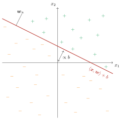
8.1.2 Homogeneous Linear Functions
Considering a vector and a scalar is quite problematic from a notation point of view, because you have to incorporate the two elements separately. One way to overcome this drawback is to use the transformation of homogeneous coordinates, which consists in adding a dimension to the vectors \(\boldsymbol{x}\) and \(\boldsymbol{w}\) in the following way:
\[\begin{align*} &\boldsymbol{x} \ \longrightarrow \ \boldsymbol{x'}=\left(1,x_1,\dots,x_d\right)\\ &\boldsymbol{w} \ \longrightarrow \ \boldsymbol{w'}=\left(b,w_1,\dots,w_d\right) \end{align*}\]
The dot product between the two new vectors will give:
\[ \sprod{x'}{w'}=b+x_1w_1+\dotsc+x_dw_d=\sum_{i=1}^dx_iw_i+b=\sprod{x}{w}+b \]
From now on, therefore, we will rewrite the affine functions in the form
\[ \boxed{h_{\boldsymbol{w},b}(\boldsymbol{x})=\sprod{x'}{w'}=\sum_{i=1}^{d+1}x_i'w_i'} \]
Through this transformation we have managed to make the affine functions into real linear functions, determined by a single vector of dimension \(d+1\).
8.2 Halfspaces
By choosing binary classification, and therefore \(\phi(z)=sign(z)\), we obtain the class of halfspaces, so called precisely because they divide the considered \(d\)-dimensional space into two halves:
\[ HS_d=\{x\rightarrow sign\left(\sprod{x'}{w'}\right), \boldsymbol{w'}\in\mathbb{R}^{d+1}\} \]
As is predictable, being a binary classification, the loss function is a \(0-1\) objective function.
The realizability condition for this class coincides with linear separability: if the problem is linearly separable then there is at least one halfspace in the class capable of correctly classifying all the points in the space.
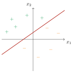
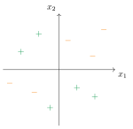
8.2.1 Linear Programming
In linear programming, the objective is to maximize a linear function that is subject to constraints:
\[ \max_{\boldsymbol{w}\in\mathbb{R}^d}\sprod{u}{w} \ \ \text{with} \ A\boldsymbol{w}\geqslant\boldsymbol{v} \tag{8.2}\]
where \(A\in\mathbb{R}^{m\times d}\) is a given matrix, \(\boldsymbol{u}\in\mathbb{R}^d\) and \(\boldsymbol{v}\in\mathbb{R}^m\) are two given vectors and finally \(\boldsymbol{w}\in\mathbb{R}^d\) is the unknown vector to be identified.
This type of problem, called a linear program, can be solved through specific algorithms such as the simplex algorithm, which we do not deal with since it concerns the field of optimization and not machine learning.
What interests us, in fact, is that the empirical risk minimization related to halfspaces can be expressed as a linear program if the realizability assumption is satisfied. To understand how, let’s write the classification of a training set \(\mathcal{S}=\left\{\left(\boldsymbol{x_i},y_i\right)\right\}\) of size \(m\) through halfspaces:
\[ sign\left(\sprod{x_i}{w}\right)=y_i \ \\ \forall i=1,\dots,m \]
where, we recall, the first coordinate of \(\boldsymbol{x_i}\) is \(1\) and the first coordinate of \(\boldsymbol{w}\) is the parameter \(b\).
Equivalently, this classification can be rewritten as:
\[ y_i\sprod{x_i}{w}>0 \ \\ \forall i=1,\dots,m \tag{8.3}\]
since the two quantities must have the same sign.
Since the realizability condition is satisfied, there certainly exists a vector \(\boldsymbol{w'}\) such that the classification of all points is correct. We define the vector \(\boldsymbol{w''}\) as follows:
\[ \boldsymbol{w''}=\frac{\boldsymbol{w'}}{\min\limits_{i\in[1,m]}y_i\sprod{x_i}{w'}} \]
Substituting in (eq-predictor-lineari-programmazione-lineare-classificazione-halfspace) we obtain:
\[ y_i\sprod{x_i}{w''}=\frac{y_i\sprod{x_i}{w'}}{\min\limits_{i\in[1,m]}y_i\sprod{x_i}{w'}}\geqslant1 \ \\ \forall i=1,\dots,m \]
since the numerator is always greater than or at the limit equal to the denominator.
We have thus shown that there exists a vector \(\boldsymbol{w}\) that satisfies the relation
\[ y_i\sprod{x_i}{w}\geqslant1 \ \\ \forall i=1,\dots,m \tag{8.4}\]
We define the matrix \(A\) as follows: (Each term \(x\) has two indices: the first refers to the element of the training set, and therefore goes from \(1\) to \(m\), while the second refers to the element of the vector, which being in a space of dimension \(d+1\) (we recall that the first element of each vector is a \(1\) added “a posteriori”) will go from \(1\) to \(d+1\).)
\[ A= \begin{pmatrix} y_1x_{11} & y_1x_{12} & \dots & y_1x_{1(d+1)}\\ y_2x_{21} & y_2x_{22} & \dots & y_2x_{2(d+1)}\\ \vdots & \vdots & \ddots & \vdots\\ y_mx_{m1} & y_mx_{m2} & \dots & y_mx_{m(d+1)}\\ \end{pmatrix} \]
Therefore, setting \(\boldsymbol{v}=(1,1,\dots,1)\in\mathbb{R}^m\) we can rewrite (eq-predictor-lineari-programmazione-lineare-classificazione-maggiore-uguale) as
\[ A\boldsymbol{w}\geqslant\boldsymbol{v} \]
that is, the same form of the constraints written in equation (eq-predictor-lineari-programma-lineare).
The most important difference with respect to a linear program is that the latter requires the maximization of the dot product \(\sprod{u}{w}\) being \(u\in\mathbb{R}^{d+1}\) a given vector. The point is that according to the ERM algorithm all the vectors that satisfy (eq-predictor-lineari-programmazione-lineare-classificazione-maggiore-uguale) are equivalent candidates for our hypothesis, since they all nullify the empirical risk; (We will see in the next section how, in reality, it is possible to identify “better” candidates than others through halfspaces.) for this reason, we choose to set \(\boldsymbol{u}\)=(0,0,,0) so that the dot product is the same for all vectors \(\boldsymbol{w}\).
8.2.2 VC Dimension of Halfspaces
We will see below a theorem according to which the VC dimension of homogeneous halfspaces (\(b=0\)) is equal to \(d\). In reality, it is not difficult to guess that for non-homogeneous halfspaces the VC dimension is instead \(d+1\), as a “constraint” related to the passage of the halfspace through the origin is missing.
We can observe some examples that allow us to better understand this discussion. Reasoning on the plane (\(d=2\)) it is easy to see that the VC dimension corresponds to three; given a generic set of three points, in fact, we have:
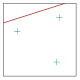
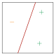
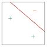
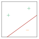
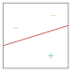
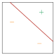
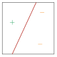
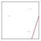
It would remain to be verified that all sets with four points are not shatterable by any halfspace; referring to Figure fig-predictor-lineari-halfspace-dimensione-vc-d-2-2 we observe the following:
- Figure fig-predictor-lineari-halfspace-dimensione-vc-d-2-2-a: Three points classified in the same way placed at the vertices of an ideal triangle inside which there is the fourth point classified in a different way; it is impossible to isolate the central point in a region of space different from at least one of the vertices.
- Figure fig-predictor-lineari-halfspace-dimensione-vc-d-2-2-b: By moving the point to one of the sides of the triangle, the classification according to halfspaces remains impossible.
- Figure fig-predictor-lineari-halfspace-dimensione-vc-d-2-2-c: If the point goes outside the triangle then it is possible to classify all the points; let’s imagine now, however, to identify a quadrilateral at whose vertices the four points are placed, and that these are classified so that the opposite vertices have the same label which is different from that of the other two: it thus becomes impossible to classify all four points correctly with a halfspace.
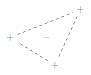
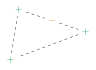
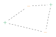
Let’s now see the rigorous proof for homogeneous halfspaces.
The VC dimension of the class of homogeneous halfspaces in \(\mathbb{R}^d\) is equal to \(\boldsymbol{d}\).
First part: \(VCdim\left(HS_d\right)\geqslant d\)
We just need to verify the existence of a set of points that is shatterable by halfspaces. Let’s then consider the simplest one to imagine, that is, the one formed by the canonical basis of the space \(\left\{\boldsymbol{e_1},\boldsymbol{e_2},\dots,\boldsymbol{e_d}\right\}\) in which each vector \(\boldsymbol{e_i}\) has all null components except for the \(i\)-th one set to \(1\).
The halfspace capable of correctly classifying all the points is the one whose weight vector is
\[ \boldsymbol{w}=\left(y_1,y_2,\dots,y_d\right) \]
being \(y_i\) the label of the \(i\)-th point.
In fact, we have
\[ \sprod{e_i}{w}=y_i \quad \forall i \]
which certifies the correct classification, and this is valid for any configuration of labels of the points.
Second part: \(VCdim\left(HS_d\right)<d+1\)
Let’s imagine a generic set composed of \(d+1\) vectors:
\[ \left\{\boldsymbol{x_1},\boldsymbol{x_2},\dots,\boldsymbol{x_{d+1}}\right\} \]
These vectors will certainly not be linearly independent, being in greater number than the dimension of the space. This means, according to linear algebra, that there exists a set of real numbers \(\left\{a_1,a_2,\dots,a_{d+1}\right\}\) such that
\[ \sum_{i=1}^{d+1}a_i\boldsymbol{x_i}=0 \tag{8.5}\]
Let’s now define the following sets:
\[ I=\left\{i:a_i>0\right\} \ \ \text{and} \ \ J=\left\{j:a_j<0\right\} \]
At least one of the two is certainly not empty; let’s imagine, for now, that neither of them is empty.
In order for (eq-predictor-lineari-dimensione-vc-halfspace-dimostrazione) to hold, it is necessary that
\[ \sum_{i\in I}a_i\boldsymbol{x_i}=\sum_{j\in J}\abs{a_j}\boldsymbol{x_j} \tag{8.6}\]
Let’s now assume that the set of \(d+1\) vectors is shatterable; then there exists a weight vector \(\boldsymbol{w}\) such that
\[ \begin{cases} \sprod{x_i}{w}>0 & \forall i\in I\\ \sprod{x_j}{w}<0 & \forall j\in J \end{cases} \]
From which it follows:
\[ \begin{cases} \sum\limits_{i\in I}a_i\sprod{x_i}{w}>0\\ \sum\limits_{j\in J}\abs{a_i}\sprod{x_j}{w}<0 \end{cases} \tag{8.7}\]
And yet, by the linearity of the dot product, we find that
\[ \sum\limits_{i\in I}a_i\sprod{x_i}{w}=\sprod{\sum\limits_{i\in I}a_ix_i}{w} \]
From (eq-predictor-lineari-dimensione-vc-halfspace-dimostrazione-2) it follows:
\[ \sprod{\sum\limits_{i\in I}a_ix_i}{w}=\sprod{\sum\limits_{j\in J}\abs{a_j}x_j}{w}=\sum\limits_{j\in J}\abs{a_j}\sprod{x_j}{w} \]
We are thus faced with a contradiction, since the first members of the inequalities of (eq-predictor-lineari-dimensione-vc-halfspace-dimostrazione-3) are equal to each other, when according to the system one is positive and the other is negative. It follows that the set of vectors, in reality, is not shatterable.
In the case where \(I\) (or \(J\)) is empty then the first member (or second member) of (eq-predictor-lineari-dimensione-vc-halfspace-dimostrazione-2) will be null, still maintaining the contradiction given by the last chain of equalities.
8.3 Perceptron
A linear algorithm that makes explicit use of the class of halfspaces is the perceptron, first introduced by Rosenblatt in 1958 and considered the ancestor of what is a neuron in a neural network.
The objective of the algorithm is to identify a hyperplane (defined by the vector \(\boldsymbol{w}\)) that separates the space in order to correctly classify all the available data.
The method proceeds in steps: we start from a generic vector \(\boldsymbol{w}\) (usually the null vector) and we check the correct classification of the points; once a wrongly labeled point is encountered (we will say misclassified) this will be used to correct \(\boldsymbol{w}\) in order to correctly classify this point; we then repeat the check of all the points, proceeding in the same way until - if the realizability condition is satisfied - all the points will be classified correctly: it is possible to show, in fact, that if the data set is linearly separable then the convergence of the algorithm is guaranteed.
The advantage of the perceptron is that, in most cases, it is a very fast and above all simple algorithm to implement.
8.3.1 Novikoff Perceptron Bound
A fundamental result quantifies the number of mistakes the perceptron makes when learning a linearly separable dataset.
Suppose there exists a weight vector \(\boldsymbol{w}^*\) with \(\|\boldsymbol{w}^*\| = 1\) such that \(y_i \langle \boldsymbol{w}^*, \boldsymbol{x}_i \rangle \geq \gamma\) for all training examples \(i\), where \(\gamma > 0\) is the margin. If \(R = \max_i \|\boldsymbol{x}_i\|\), then the perceptron makes at most \((R/\gamma)^2\) mistakes on any finite training sequence.
This bound shows that the perceptron converges faster when the margin is larger (points are further from the decision boundary) and slower when examples are more distant from the origin. The bound is independent of the dimension of the data, which is a key strength of the perceptron algorithm.
8.3.2 Procedure
- The learning set formed by the pairs \(\left(\boldsymbol{x_i},y_i\right)\) is loaded into memory
- The vector \(\boldsymbol{w}=(0,\dots,0)\) is initialized, which we will denote by \(\boldsymbol{w^{(1)}}\)
- A loop is constructed with \(t=1,2,\dots\) in which, at each iteration, a check is made on the correct classification of all points
- a pair \(\left(\boldsymbol{x_i},y_i\right)\) is identified such that \(y_i\sprod{w^{(t)}}{x_i}\leqslant0\) then we set \(w^{(t+1)}=w^{(t)}+y_ix_i\), otherwise the loop is interrupted and \(w^{(t)}\) is returned
The reason why the weight vector is updated by adding the term \(y_i\boldsymbol{x_i}\) is evident by making the classification check explicit:
\[ y_i\sprod{w^{(t+1)}}{x_i}=y_i\sprod{w^{(t)}}{x_i}+y_i^2\sprod{x_i}{x_i}=y_i\sprod{w^{(t)}}{x_i}+\norm{\boldsymbol{x_i}} \]
being \(y_i=\pm1\).
The correction of the vector \(\boldsymbol{w}\), therefore, is made in such a way as to add a certainly positive term, that is, the norm of the vector \(\boldsymbol{x_i}\): if \(\norm{\boldsymbol{x_i}}\geqslant0\) is able to “counterbalance” \(y_i\sprod{w^{(t)}}{x_i}\leqslant0\) then the point \(\boldsymbol{x_i}\) will be correctly classified.
### Theorem on the Convergence of the Method
The only problem left pending is when the algorithm is interrupted. We will see below a theorem that guarantees that, in the case of a linearly separable data set, the perceptron will converge to a solution that correctly classifies all the points; the theorem will also provide us with an upper bound on the number of iterations useful for convergence.
Let \(\left(\boldsymbol{x_1},y_1\right),\dots,\left(\boldsymbol{x_m},y_m\right)\) be a linearly separable data set.
We define:
- \(B=\min\left\{\norm{\boldsymbol{w}}:y_i\sprod{w}{x_i}\geqslant1 \ \forall i=1,\dots,m\right\}\)
- \(R=\max\norm{\boldsymbol{x_i}}\)
Then it follows that:
- The perceptron stops after at most \((RB)^2\) iterations
- When the perceptron stops, all data are correctly classified
The second thesis is evident from how the perceptron was designed in the first place: as we saw in the procedure, in fact, the moment all the points are classified correctly, the loop is interrupted and so is the algorithm. It therefore remains to be understood how \((RB)^2\) is able to quantify the maximum number of iterations beyond which the perceptron has achieved its purpose, that is, to nullify the empirical risk.
Let:
- \(\boldsymbol{w^*}\) be the weight vector that satisfies the definition of \(B\)
- \(T\) be the number of iterations followed by the algorithm before it stops
The thesis therefore becomes:
\[ T\leqslant(RB)^2 \tag{8.8}\]
Rearranging the terms we get:
\[ \frac{T}{(RB)^2}\leqslant1 \ \iff \ \frac{\sqrt{T}}{RB}\leqslant1 \ \iff \ \frac{T}{\sqrt{T}RB}\leqslant1 \]
Let’s now introduce a last term, that is, the dot product between the vectors \(\boldsymbol{w^*}\) and \(\boldsymbol{w^{(T+1)}}\) divided by the product of their norms. By the Cauchy-Schwarz inequality, this term is certainly less than or equal to \(1\):
\[ \frac{\sprod{w^*}{w^{(T+1)}}}{\norm{\boldsymbol{w^*}}\norm{\boldsymbol{w^{(T+1)}}}}\leqslant1 \]
The idea of the proof is to verify that
\[ \frac{T}{\sqrt{T}RB}\leqslant\frac{\sprod{w^*}{w^{(T+1)}}}{\norm{\boldsymbol{w^*}}\norm{\boldsymbol{w^{(T+1)}}}} \]
from which the (eq-predictor-lineari-perceptron-teorema-tesi) would automatically follow.
The proof is divided into two parts: first we will show that the numerator of the second member is greater than or equal to the numerator of the first member, and then we will show that the denominator of the second member is less than or equal to the denominator of the first member.
First part (numerator): \(\sprod{w^*}{w^{(T+1)}}\geqslant T\)
Let’s rewrite the dot product through a summation as follows:
\[ \sprod{w^*}{w^{(T+1)}}=\sum_{t=1}^T\left(\sprod{w^*}{w^{(t+1)}}-\sprod{w^*}{w^{(t)}}\right) \tag{8.9}\]
All the terms, in fact, will gradually cancel each other out, up to \(t=T\), where only the first term of the difference will remain, which will not be canceled by any opposite.
Applying the linearity property of the dot product we will write:
\[ \sum_{t=1}^T\left(\sprod{w^*}{w^{(t+1)}}-\sprod{w^*}{w^{(t)}}\right)=\sum_{t=1}^T\sprod{w^*}{w^{(t+1)}-w^{(t)}} \]
According to the perceptron update rule:
\[ \boldsymbol{w^{(t+1)}}=\boldsymbol{w^{(t)}}+y_i\boldsymbol{x_i} \ \Longrightarrow \ \boldsymbol{w^{(t+1)}}-\boldsymbol{w^{(t)}}=y_i\boldsymbol{x_i} \]
Returning to (eq-predictor-lineari-perceptron-teorema-dim-1) we will therefore write:
\[ \sprod{w^*}{w^{(T+1)}}=\sum_{t=1}^Ty_i\sprod{w^*}{x_i} \]
From the definition of \(\boldsymbol{w^*}\) given at the beginning of the proof, which is related to that of \(B\) given among the hypotheses, it results:
\[ y_i\sprod{w^*}{x_i}\geqslant1 \ \Longrightarrow \ \sprod{w^*{w^{(T+1)}}\geqslant}\sum_{t=1}^T1=T \]
Second part (denominator): \(\norm{\boldsymbol{w^*}}\norm{\boldsymbol{w^{(T+1)}}}\leqslant\sqrt{T}RB\)
With the same reasoning used above for the first part of the proof, let’s rewrite the squared norm of \(\boldsymbol{w^{(T+1)}}\) through a summation:
\[ \norm{\boldsymbol{w^{(T+1)}}}^2=\sum_{t=1}^T\left(\norm{\boldsymbol{w^{(t+1)}}}^2-\norm{\boldsymbol{w^{(t)}}}^2\right) \]
Let’s make \(\boldsymbol{w^{(t+1)}}\) explicit:
\[\begin{align*} \norm{\boldsymbol{w^{(T+1)}}}^2&=\sum_{t=1}^T\left(\norm{\boldsymbol{w^{(t)}}+y_i\boldsymbol{x_i}}^2-\norm{\boldsymbol{w^{(t)}}}^2\right)=\\ &=\sum_{t=1}^T\left(\cancel{\norm{\boldsymbol{w^{(t)}}}^2}+y_i^2\norm{\boldsymbol{x_i}}^2+2y_i\sprod{w^{(t)}}{x_i}-\cancel{\norm{\boldsymbol{w^{(t)}}}^2}\right)=\\ &=\sum_{t=1}^T\left(\norm{\boldsymbol{x_i}}^2+2y_i\sprod{w^{(t)}}{x_i}\right) \end{align*}\]
We will have that:
- \(\norm{\boldsymbol{x_i}}^2\leqslant R^2\) from the definition of \(R\)
- \(y_i\sprod{w^{(t)}}{x_i}\leqslant0\) because all the iterations of the algorithm up to the \(T\)-th one occur by virtue of the fact that the \(i\)-th point is not correctly classified
Considering these upper bounds it follows:
\[ \norm{\boldsymbol{w^{(T+1)}}}^2\leqslant\sum_{t=1}^T\left(R^2+0\right)=TR^2 \ \iff \ \norm{\boldsymbol{w^{(T+1)}}}\leqslant\sqrt{T}R \]
By definition \(\norm{\boldsymbol{w^*}}=B\), so multiplying member by member:
\[ \norm{\boldsymbol{w^*}\norm{\boldsymbol{w^{(T+1)}}}\leqslant\sqrt{T}RB} \]
8.3.3 Problems with the Algorithm
The good news is that convergence for a linearly separable data set is guaranteed by the theorem just proved; the bad news is that the term \(B\) could grow exponentially with \(d\), that is, the dimension of the space, so for problems with high dimensional data convergence, although certain, could take too long.
The solutions in this case can be three:
- Normalize the input vectors with respect to the largest among them, in order to reduce significant corrections of the weight vector due to the important difference in scale that can exist in the training data set. This action brings with it an inevitable reduction in the sensitivity of the model, which could be excessive when the difference in size of the considered vectors is too large.
- Modify the order of the input vectors, since ordered in a certain way they could lead the weight vector in an initially “wrong” direction that takes time to be corrected.
- Rearrange the problem in the form of a linear program, indicating the correct classification of the points as the constraints and choosing an arbitrary objective function to maximize or minimize.
Another element to take into consideration is that the perceptron does not provide a unique solution, but can provide different solutions based on the initial value of \(\boldsymbol{w}\).
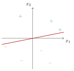
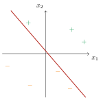
A final - obvious - consideration to make concerns the case of non-realizability, that is, when the data set is not linearly separable. As we know, the perceptron is not able to arrive at a solution that correctly classifies all the points in the space, so a maximum number of iterations of the algorithm is fixed and at each iteration the number of misclassified points associated with the solution is saved: the one with the lowest number of mislabeled points is chosen as the solution as it is considered the best. This type of procedure is called the pocket algorithm, as you “pocket” the best solution among those found.
8.3.4 Example of Learning through the Perceptron
Before seeing a practical example of how the algorithm works, let’s introduce a last parameter called the learning rate \(\eta\): it is a real number, between \(0\) and \(1\), which is multiplied by \(y_i\boldsymbol{x_i}\) so that the term added to the correction of the weight vector is not so large.
The update will therefore be:
\[ \boldsymbol{w^{(t+1)}} \ \longrightarrow \ \boldsymbol{w^{(t)}}+\eta y_i\boldsymbol{x_i} \]
The learning rate is introduced so as not to have too large oscillations at each iteration, which would risk slowing down the convergence of the algorithm (in the case of realizability) or leading to suboptimal solutions (in the case of non-realizability): by limiting the oscillations, in fact, you have greater control over the update of the vector which should not change excessively if the number of misclassified points is low.
Let’s now start dealing with a specific example; let’s consider the following set of points: (The grid has a step of \(0.5\) both horizontally and vertically.)
Let’s fix the following parameters:
\[ \eta=0.2 \ \ \text{and} \ \ \boldsymbol{w}= \begin{pmatrix} 0\\ 1\\ 0.5 \end{pmatrix} \]
Let’s calculate which halfspace it corresponds to:
\[ \begin{pmatrix} 0\\ 1\\ 0.5 \end{pmatrix} \begin{pmatrix} 1 & x_1 & x_2 \end{pmatrix} =0+x_1+0.5x_2=0 \ \Longrightarrow \ x_2=-\frac{1}{0.5}x_1=-2x_1 \]
Let’s visualize the halfspace in the graph:
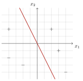
Let’s start with the check of the classification of the data, starting from the first quadrant and proceeding clockwise, remembering that \(\sprod{w}{x}=x_1+0.5x_2\).
\(x_1=1\), \(x_2=1\), \(y=1\)
\[\begin{align*} &y\sprod{w}{x}=1+0.5\cdot1=1+0.5=1.5\geqslant0\\ &y\sprod{w}{x}\geqslant0 \ \Longrightarrow \ \text{Correct classification} \end{align*}\]
\(x_1=1.5\), \(x_2=-0.5\), \(y=1\)
\[\begin{align*} &y\sprod{w}{x}=1.5+0.5\cdot(-0.5)=1.5-0.25=1.25\geqslant0\\ &y\sprod{w}{x}\geqslant0 \ \Longrightarrow \ \text{Correct classification} \end{align*}\]
\(x_1=2\), \(x_2=-2\), \(y=-1\)
\[\begin{align*} &y\sprod{w}{x}=-[2+0.5\cdot(-2)]=-(2-1)=-1\leqslant0\\ &y\sprod{w}{x}\leqslant0 \ \Longrightarrow \ \text{Wrong classification} \end{align*}\]
We have found a case of a misclassified point, so we update the weight vector according to the algorithm’s rule:
\[ \boldsymbol{w} \ \longrightarrow \ \boldsymbol{w+\eta y\boldsymbol{x}=} \begin{pmatrix} 0\\ 1\\ 0.5 \end{pmatrix} +0.2\cdot(-1) \begin{pmatrix} 1\\ 2\\ -2 \end{pmatrix} = \begin{pmatrix} 0-0.2\\ 1-0.4\\ 0.5+0.4 \end{pmatrix} = \begin{pmatrix} -0.2\\ 0.6\\ 0.9 \end{pmatrix} \]
Let’s do the calculation again to visualize the line:
\[ \begin{pmatrix} -0.2\\ 0.6\\ 0.9 \end{pmatrix} \begin{pmatrix} 1 & x_1 & x_2 \end{pmatrix} =-0.2+0.6x_1+0.9x_2=0 \ \Longrightarrow \ x_2=-\frac{0.6}{0.9}x_1+\frac{0.2}{0.9} \]
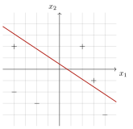
I won’t repeat the calculations as it is clear from the graph that the three points are now correctly classified according to this new weight vector; moreover, the two points in the third quadrant are also classified correctly, while the last remaining point, the one in the second quadrant, is classified incorrectly. Let’s update the weight vector again according to the rule:
\[ \boldsymbol{w} \ \longrightarrow \ \boldsymbol{w+\eta y\boldsymbol{x}=} \begin{pmatrix} -0.2\\ 0.6\\ 0.9 \end{pmatrix} +0.2\cdot1 \begin{pmatrix} 1\\ -2\\ 1 \end{pmatrix} = \begin{pmatrix} -0.2+0.2\\ 0.6-0.4\\ 0.9+0.2 \end{pmatrix} = \begin{pmatrix} 0\\ 0.2\\ 1.1 \end{pmatrix} \]
from which we find
\[ \begin{pmatrix} 0\\ 0.2\\ 1.1 \end{pmatrix} \begin{pmatrix} 1 & x_1 & x_2 \end{pmatrix} =0+0.2x_1+1.1x_2=0 \ \Longrightarrow \ x_2=-\frac{0.2}{1.1}x_1 \]
This solution gives us:
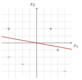
Unfortunately, a point that was previously correctly classified is no longer so, so we re-update the weight vector through its coordinates:
\[ \boldsymbol{w} \ \longrightarrow \ \boldsymbol{w+\eta y\boldsymbol{x}=} \begin{pmatrix} 0\\ 0.2\\ 1.1 \end{pmatrix} +0.2\cdot1 \begin{pmatrix} 1\\ 1.5\\ -0.5 \end{pmatrix} = \begin{pmatrix} 0+0.2\\ 0.2+0.3\\ 1.1-0.1 \end{pmatrix} = \begin{pmatrix} 0.2\\ 0.5\\ 1 \end{pmatrix} \]
\[ \begin{pmatrix} 0.2\\ 0.5\\ 1 \end{pmatrix} \begin{pmatrix} 1 & x_1 & x_2 \end{pmatrix} =0.2+0.5x_1+x_2=0 \ \Longrightarrow \ x_2=-0.5x_1-0.2 \]
This is the halfspace that gives us the correct classification of all the points in the set:
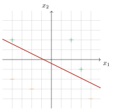
8.4 Linear Regression
Linear regression is an extremely common statistical tool for identifying the relationship that exists between some “explanatory” variables and a result expressed as a real number.
Suppose, for example, that we want to “predict” the price of a house in a certain city as a function of four parameters: the surface area, the number of rooms, the year of construction and the distance from the center. To this end, we could observe the real estate market to understand at what price houses are actually sold as a function of these parameters, trying to “quantify” the law that links the two things.
Formally, the “explanatory” variables will belong to a domain \(\mathcal{X}\in\mathbb{R}^d\), where \(d\) is the number of the aforementioned variables, while the result with a real value will be in the set of labels \(\mathcal{Y}\in\mathbb{R}\).
The predictor will correspond exactly to a linear function; the class to which it belongs, in fact, is
\[ \mathcal{H}_{reg}=\left\{x\to\sprod{x'}{w'},\boldsymbol{w'}\in\mathbb{R}^{d+1}\right\} \tag{8.10}\]
which coincides exactly with the class of affine functions \(L_d\) (equation eq-predictor-lineari-modello-delle-funzioni-affini-classe).
It remains to define the loss function and the algorithm useful for identifying the best predictor. As for the first, the quadratic objective function is often chosen, also called squared loss:
\[ l(h(\boldsymbol{x}),y)=(h(\boldsymbol{x})-y)^2 \]
This function is very sensitive to so-called outliers, that is, to those points that are geometrically very distant from where the majority of them are located, which could therefore be the cause of overfitting. Depending on the available data set, in fact, one might prefer the mean absolute error, defined as the difference between \(h(\boldsymbol{x})\) and \(y\) in absolute value.
Finally, the empirical risk function to be minimized is none other than the mean squared error of the training set, that is, the average of the loss functions calculated for each point of \(\mathcal{S}\):
\[ L_{\mathcal{S}}(h)=\frac{1}{m}\sum_{i=1}^m\left(h\left(\boldsymbol{x_i}\right)-y_i\right)^2 \]
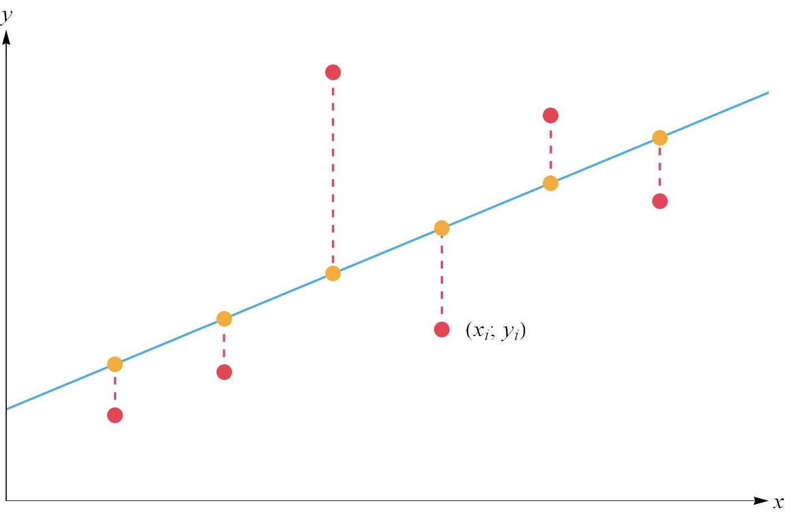
8.4.1 Quality of the Prediction
The average of the errors can be a good index to establish the quality of linear regression as a class of predictors useful for finding a correlation between the data. In Figure fig-predictor-lineari-regressione-lineare-correlazione we show four different “classifications” distinguished on the basis of the average error obtained:
- Figure fig-predictor-lineari-regressione-lineare-correlazione-a: The points are concentrated and follow a linear growth: this is the ideal condition for a linear regression, to which a very small error will thus be associated, demonstrating a strong correlation between the data
- Figure fig-predictor-lineari-regressione-lineare-correlazione-b: The correlation is weaker but the prediction is still good compared to the average: this translates into a high variance, often attributable to a random noise that partially alters the data collection and which must be taken into account in statistical analyses
- Figure fig-predictor-lineari-regressione-lineare-correlazione-c: There is no form of correlation, which mathematically translates into \(E[Y|X]=E[Y]\), in the sense that the expected value is independent of the variable considered, so any line chosen will be equivalent to all the others, providing no information
- Figure fig-predictor-lineari-regressione-lineare-correlazione-d: The correlation is present and is also strong but it is not linear, so we are choosing the wrong class of hypotheses for this problem
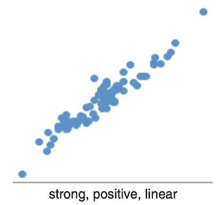
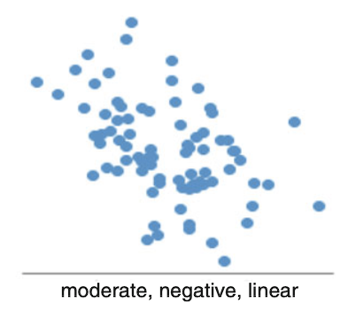
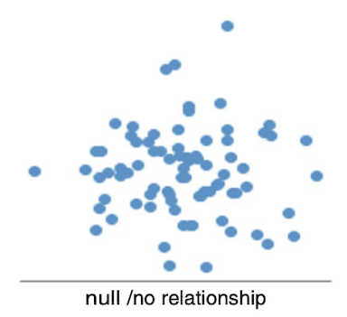
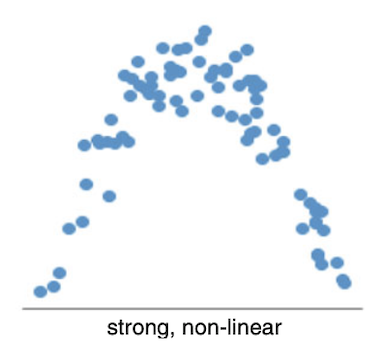
8.4.2 Least Squares
Let’s now make the algorithm explicit to understand concretely how to identify the best predictor for a data set.
What we want to calculate is
\[ \argmin_{\boldsymbol{w}}L_{\mathcal{S}}\left(h_{\boldsymbol{w}}\right)=\argmin_{\boldsymbol{w}}\left[\frac{1}{m}\sum_{i=1}^m\left(\sprod{x_i}{w}-y_i\right)^2\right] \]
since we want to minimize the empirical risk function.
Let’s then derive with respect to \(\boldsymbol{w}\) and set this derivative to zero:
\[ \frac{2}{m}\sum_{i=1}^m\left(\sprod{x_i}{w}-y_i\right)\boldsymbol{x_i}=0 \ \Longrightarrow \ \sum_{i=1}^m\sprod{x_i}{w}\boldsymbol{x_i}=\sum_{i=1}^my_i\boldsymbol{x_i} \]
We want to rewrite this expression in the form
\[ A\boldsymbol{w}=\boldsymbol{b} \]
so that it is simple to derive the weight vector.
The second member is trivial, since it is sufficient to set \(\boldsymbol{b}=\sum\limits_{i=1}^my_i\boldsymbol{x_i}\). As for the first member, let’s consider, for now, only the first term of the summation:
\[ x_{11}w_1+x_{12}w_2+\dotsc+x_{1d}w_d \begin{pmatrix} x_{11}\\ x_{12}\\ \vdots\\ x_{1d} \end{pmatrix} = \begin{pmatrix} x_{11}x_{11}w_1+x_{12}x_{11}w_2+\dotsc+x_{1d}x_{11}w_d\\ x_{11}x_{12}w_1+x_{12}x_{12}w_2+\dotsc+x_{1d}x_{12}w_d\\ \vdots\\ x_{11}x_{1d}w_1+x_{12}x_{1d}w_2+\dotsc+x_{1d}x_{1d}w_d\\ \end{pmatrix} \]
We are interested in factoring out \(\boldsymbol{w}\), so we will have to define a matrix composed of \(d\) columns such that the product with \(\boldsymbol{w}\) returns the vector written above. It is clear that this matrix will be:
\[ \begin{pmatrix} x_{11}x_{11} & x_{12}x_{11} & \dots & x_{1d}x_{11}\\ x_{11}x_{12} & x_{12}x_{12} & \dots & x_{1d}x_{12}\\ \vdots & \vdots & \ddots & \vdots\\ x_{11}x_{1d} & x_{12}x_{1d} & \dots & x_{1d}x_{1d} \end{pmatrix} \]
which can also be rewritten as
\[ \begin{pmatrix} x_{11}\\ x_{12}\\ \vdots\\ x_{1d} \end{pmatrix} \begin{pmatrix} x_{11} & x_{12} & \dots & x_{1d} \end{pmatrix} =\boldsymbol{x_1}\boldsymbol{x_1^T} \]
Having to repeat this reasoning also for all the other \(m-1\) vectors, in the end we will obtain the matrix:
\[ A=\sum_{i=1}^m\boldsymbol{x_i}\boldsymbol{x_i^T}= \begin{pmatrix} x_{11} & x_{21} & \dots & x_{m1}\\ x_{12} & x_{22} & \dots & x_{m2}\\ \vdots & \vdots & \ddots & \vdots\\ x_{1d} & x_{2d} & \dots & x_{md} \end{pmatrix} \begin{pmatrix} x_{11} & x_{12} & \dots & x_{1d}\\ x_{21} & x_{22} & \dots & x_{2d}\\ \vdots & \vdots & \ddots & \vdots\\ x_{m1} & x_{m2} & \dots & x_{md} \end{pmatrix} \]
At this point, identifying the weight vector will be immediate:
\[ A\boldsymbol{w}=\boldsymbol{b} \ \Longrightarrow \ \boxed{\boldsymbol{w}=A^{-1}\boldsymbol{b}} \tag{8.11}\]
8.4.2.1 Closed-form Least Squares Solution
Let \(X \in \mathbb{R}^{m \times d}\) be the data matrix where each row is an example \(\boldsymbol{x}_i\), and \(\boldsymbol{y} \in \mathbb{R}^m\) be the vector of labels. The least squares problem is to minimize:
\[ {\mathcal{L}}(\boldsymbol{w}) = \|\boldsymbol{y} - X\boldsymbol{w}\|^2 \]
Taking the derivative with respect to \(\boldsymbol{w}\) and setting it to zero:
\[ \frac{\partial \mathcal{L}}{\partial \boldsymbol{w}} = -2X^T(\boldsymbol{y} - X\boldsymbol{w}) = 0 \]
This yields the normal equations:
\[ X^T X \boldsymbol{w} = X^T \boldsymbol{y} \]
The closed-form solution (when \(X^T X\) is invertible) is:
\[ \boldsymbol{w} = (X^T X)^{-1} X^T \boldsymbol{y} \]
This is the optimal weight vector for linear regression with squared loss, and can be computed directly without iteration.
8.4.3 Polynomial Regression
If we want to perform a polynomial regression considering only one explanatory variable \(x\in\mathbb{R}\), we can exploit what we have seen so far for linear regression.
The generic polynomial of degree \(n\) will be given by
\[ p(x)=a_0+a_1x+a_2x^2+\dotsc+a_nx^n \]
which will automatically correspond to the predictor for our problem, so we will define the class of hypotheses as follows:
\[ \mathcal{H}_{poly}^n=\{x\to p(x)\} \]
It is useful to define a vector \(\boldsymbol{a}=\left(a_0,a_1,\dots,a_n\right)\) which must be multiplied by \((1,x,\dots,x^n)\) in order to return \(p(x)\). We recall that \(x\) represents the data of the learning set, so formally we define a function \(\psi:\mathbb{R}\to\mathbb{R}^{n+1}\) such that
\[ \psi(x)=(1,x,\dots,x^n) \]
The dot product sought is
\[ p(x)=\left\langle\psi(x),\boldsymbol{a}\right\rangle \]
from which we deduce that the class of hypotheses coincides with that of linear regression (equation eq-predictor-lineari-regressione-lineare-classe-di-hypotesis).
By deriving the vector of coefficients \(\boldsymbol{a}\) through linear regression (with the least squares method), we will find the polynomial of degree \(n\) that best fits the available data.
An element to take into consideration is that, in this case, the variables multiplied by the coefficients are not independent, since it is the same data raised to a different power: this means that if there is some form of noise in the sampling, this is propagated and amplified along the vector \(\psi(x)\).
8.5 Logistic Regression
With logistic regression we are able to solve classification problems through the use of regression.
It arises from the problem of the separability of a set: we could say that algorithms that provide for a binary classification - such as the perceptron - do not admit “exceptions”, in the sense that the solution is considered correct only when there is no misclassified element.
We can easily realize that the outliers of the found solution will not have the same weight: we will consider a solution whose misclassified points are in the proximity of the halfspace to be all in all “good”, as these are close to each other, that is, with similar “characteristics”.
In essence, we want a measure of the risk that there is an error in the classification of a point, which will be higher the closer we get to the halfspace. To this end, we will define a probability function that will model this risk, called the sigmoid:
\[ \phi_\sigma(z)=\frac{1}{1+e^{-z}} \]
whose trend is shown in the following figure.
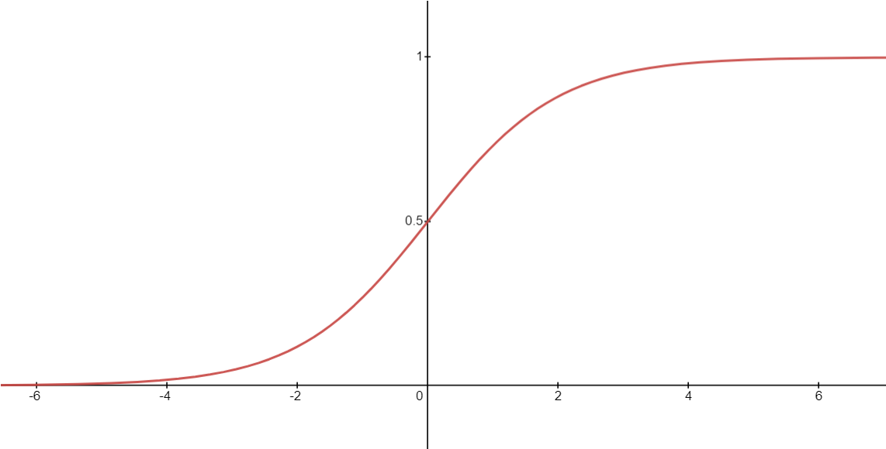
Let’s now imagine applying the sigmoid to the affine function, obtaining the class of hypotheses \(\phi_\sigma\circ L_d\). We recall that \(\sprod{w}{x}=0\) identifies the halfspace, and in general the dot product is larger in modulus the more the input \(\boldsymbol{x}\) is distant from the halfspace in question. We will then interpret the hypothesis \(h_{\boldsymbol{w}}(\boldsymbol{x})\) as the probability that the label of \(\boldsymbol{x}\) is \(1\): for large values of \(\sprod{w}{x}\), in fact, we are in the positive half-space far from the halfspace, so the probability that the label is \(1\) is high; approaching the halfspace this probability decreases until it reaches \(\sim50\%\) in the proximity of \(\sprod{w}{x}=0\); proceeding further towards negative values we will move into the negative half-space, where the probability will gradually decrease, asymptotically approaching zero.
To recap, the class of hypotheses is
\[ H_\sigma=\left\{\boldsymbol{x}\to\frac{1}{1+e^{-\sprod{w}{x}}}:\boldsymbol{w}\in\mathbb{R}^{d+1}\right\} \tag{8.12}\]
Obviously, the probability that the label is \(-1\) is the complementary one:
\[ 1-h_{\boldsymbol{w}}(\boldsymbol{x})=1-\frac{1}{1+e^{-\sprod{w}{x}}}=\frac{e^{-\sprod{w}{x}}}{1+e^{-\sprod{w}{x}}}=\frac{1}{1+e^{\sprod{w}{x}}} \tag{8.13}\]
It remains to define the loss function for this type of problem. The idea is to penalize more heavily errors related to high probabilities, so we will have in some way the opposite behavior to that observed in Figure fig-sigmoide.
We will have
\[ \ell\left(h_{\boldsymbol{w}},(\boldsymbol{x},y)\right)\propto\frac{1}{1+e^{y\sprod{w}{x}}}\propto1+e^{-y\sprod{w}{x}} \tag{8.14}\]
This proportionality is valid for both \(y=1\) and \(y=-1\): in both cases, in fact, we will have an opposite behavior to what was seen in equation (eq-predictor-lineari-regressione-logistica-hypotesis-1) and in equation (eq-predictor-lineari-regressione-logistica-hypotesis-2).
Due to its characteristic monotonic growth, the logarithm function applied to the term seen in (eq-predictor-lineari-regressione-logistica-hypotesis-3) is chosen:
\[ \boxed{\ell\left(h_{\boldsymbol{w}},(\boldsymbol{x},y)\right)=\log\left(1+e^{-y\sprod{w}{x}}\right)} \]
Given the loss function, the ERM problem follows directly:
\[ \boxed{\argmin_{\boldsymbol{w}\in\mathbb{R}^{d+1}}\frac{1}{m}\sum_{i=1}^m\log\left(1+e^{-y\sprod{w}{x}}\right)} \]
This ERM problem is to all intents and purposes equivalent to the problem of finding the Maximum Likelihood Estimator (MLE), that is, finding those parameters that maximize the joint probability of a set of data assuming a specific probability function associated with the parameters themselves. The algorithm useful for solving logistic regressions, therefore, will be the same as that for MLE problems, which we will not see in this course, however.